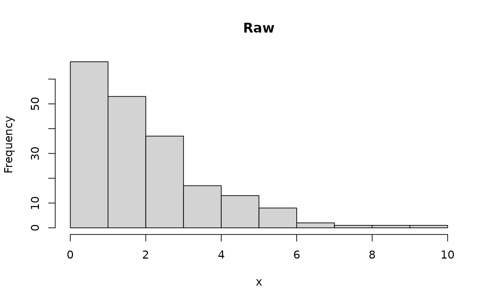
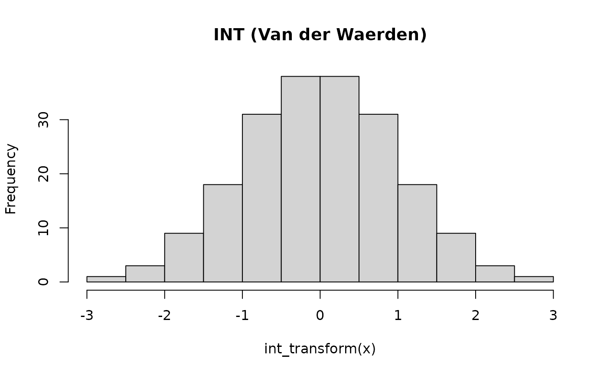

Applies a rank-based inverse-normal transformation (INT) to a numeric vector, placing empirical quantiles onto a standard normal scale.
Usage
int_transform(x, method = c("vdw", "blom"), ties = "average")Arguments
- x
Numeric vector.
NAs are preserved.- method
Which INT formula to use.
"vdw"(default) exactly replicates SOLAR Eclipse'sinormalcommand, confirmed against SOLAR's actual source (lib/solar.tcl,proc inormal): sort ascending, assignz_i = qnorm(i / (n+1))to each individual rank positioni, and for tied values average the resulting z-scores of their individual rank positions (not the z-score of the averaged rank – these differ for nonlinear qnorm whenever a tied block is not symmetric around n/2, e.g. a large block of tied values at one tail, such as zero-inflated phenotypes)."blom"is the Blom (1958) transformation,qnorm((r-0.5)/n)with conventional averaged-rank tie handling, used by R-itable prior to this fix under the (incorrect) belief that it matched SOLAR.- ties
Method passed to
base::rank()whenmethod = "blom". Ignored formethod = "vdw", which always uses SOLAR's own tie handling (see Details). Default"average".
Value
A numeric vector of the same length as x, with NAs in the same
positions and non-missing values transformed to approximate normality.
Details
For method = "vdw" with no ties, this is the Van der Waerden (1952)
transformation, qnorm(r_i / (n+1)), and is bit-identical to it. With
ties, tied individuals get the mean of qnorm(i/(n+1)) over the tied
rank positions i, exactly matching SOLAR's inormal. This distinction
only matters for heavily-tied data; it was confirmed to fully resolve
the remaining discrepancy between R-itable and SOLAR Eclipse on
zero-inflated phenotypes in the Gomes et al. validation dataset (\(>\)
25% tied values) – see NEWS.md.
For method = "blom":
$$\Phi^{-1}\!\left(\frac{r_i - 0.5}{n}\right)$$
using base::rank()'s ties argument for tie handling (default
"average", i.e. the z-score of the averaged rank – the conventional
approach for this formula, not SOLAR's).
Examples
set.seed(1)
x <- rexp(200, rate = 0.5) # right-skewed
hist(x, main = "Raw")

hist(int_transform(x), main = "INT (SOLAR-matching Van der Waerden)")

# Heavy ties (e.g. zero-inflated activity duration): SOLAR's tie handling
# (default) differs meaningfully from naive rank-average tie handling.
y <- c(rep(0, 40), round(runif(60, 1, 100)))
int_transform(y)[1] # SOLAR-exact
#> [1] -0.9393459
qnorm(rank(y, ties.method = "average")[1] / (length(y) + 1)) # naive
#> [1] -0.8310585